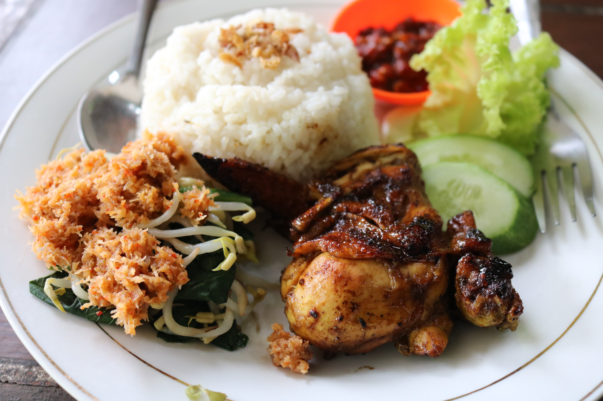

Nasi Lemak

Description
Coconut milk rice, served with sambal, fried crispy anchovies, toasted peanuts and cucumber.
Ingredients
This ingredient list is truncated.
- coconut milk steamed rice
- 2 cups rice
- 3 screwpine leaves, tie them into a knot
- salt to taste
- 1 can coconut milk (5.6oz/ 150ml-180ml)
- some water
Steps
- Just like making steamed rice, rinse your rice and drain. Add the coconut milk, a pinch of salt, and some water. Add the pandan leaves into the rice and cook your rice.
- Rinse the dried anchovies and drain the water. Fry the anchovies until they turn light brown and put aside.
- Pound the prawn paste together with shallots, garlic, and deseeded dried chilies with a mortar and pestle. You can also grind them with a food processor. Slice the red onion into rings. Soak the tamarind pulp in water for 15 minutes. Squeeze the tamarind constantly to extract the flavor into the water. Drain the pulp and save the tamarind juice.
- Heat some oil in a pan and fry the spice paste until fragrant. Add in the onion rings. Add in the ikan bilis and stir well. Add tamarind juice, salt, and sugar. Simmer on low heat until the gravy thickens. Set aside.
- Clean the small fish, cut them into half and season with salt. Deep fry. Cut the cucumber into slices and then quartered into four small pieces. Dish up the steamed coconut milk rice and pour some sambal ikan bilis on top of the rice. Serve with fried fish, cucumber slices, and hard-boiled eggs.
- Enjoy this sinful plate of goodness!